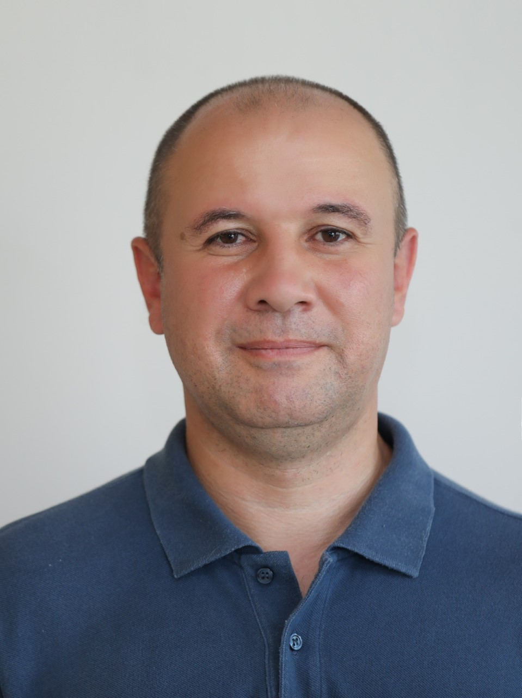

Ibrahim Toraman

Gürsu Mah. Atatürk Bulvarı Konyaaltı/Antalya
Reşatbey Mah. Seyhan/Adana
Tel: +90 533 476 66 74
e-mail: itoraman@gmail.com itoraman@hotmail.com
Summary
- Solid knowledge on IFC Performance Standards, resettlement, social impact assessment, livelihood restoration, risk assessment, reporting, monitoring and evaluation, conflict management, hospitality and representation.
- Experience on innovation ecosystem, innovation centers, mentoring and business development for SMEs.
Education
Degree of Education
- Master’s Degree in Political Science and International Relations, Yıldız Technical University, 2008.
- Bachelor’s Degree in Sociology, İstanbul Bilgi University, 2001.
Work Experience
Fraport/TAV
Antalya Airport Community Relations Manager / December 2022 onwards
- Within the scope of the Antalya Airport Expansion Project responsible for implementing Supplementary Livelihood Improvement Plan (SLIP) in one expropriation-affected settlement.
- Conducting day-to-day community relations activities with the stakeholders living in five project-affected settlements.
- Holding meetings with governmental authorities with regard to issues related to Antalya Airport Expansion Project.
Anagold Mining
Community Relations Chief / September 2021 – November 2022
- Within the framework of managing day-to-day community relations activities holding meetings with governmental authorities, mukhtars and community members.
- Preparing monthly, quarterly and annual reports.
- Preparing and updating social management documents, namely Stakeholder Engagement Plan, Grievance Procedure, Local Employment Plan, Local Procurement Plan, Community Health and Safety Plan, Community Investment Plan, Human Rights Plan, Cultural Heritage Management Plan, in compliance with IFC Performance Standards.
United Nations Development Programme (UNDP)
Field Coordinator / April 2018- August 2021
- Within the framework of the Syrian Crisis Resilience Response Program, coordination of activities with local and national partners (Ministry of Industry and Technology, Adana Chamber of Industry, Mersin Chamber of Commerce and Industry, Tarsus Organized Industry Zone) for model factory and innovation center establishments in Adana and Mersin.
- Within the scope of the Innovation Roadmap Program, mentoring to Small and Medium Enterprises (SMEs).
- Organizing events, i.e. Business Development Training, Start-Up Events, Matchmaking Events, on the job training courses to increase awareness and enhance employment opportunities.
Anagold Mining
Social Performance Coordinator / January 2015 - March 2018
- Preparing and updating social management plans and procedures, required by the International Finance Corporation (IFC), including but not limited to the Stakeholder Engagement Plan, Community Development Plan, Local Employment Plan.
- Preparing weekly, monthly, and annual reports.
- Conducting internal monitoring and reporting.
- Keeping the records of meetings, requests, and grievances.
Enerjisa
Community Relations Specialist / April 2014 – December 2014
- Carrying out resettlement activities of 4 full and 2 partially inundated villages in compliance with IFC Performance Standards.
- Holding regular meetings with local governmental authorities, mukhtars and local community members.
- Preparing weekly, monthly, and annual reports.
SRM Consulting
Monitoring and Evaluation Specialist / April 2013 – April 2014
- Conducting external monitoring and evaluation for various construction projects of Enerjisa, including but not limited to Tufanbeyli Thermal Power Plant, Köprü Hydroelectric Power Plant, Alpaslan 2 Hydroelectric Power Plant, Kavşak Hydroelectric Power Plant, Kuşaklı Hydroelectric Power Plant, Menge Hydroelectric Power Plant, Kandil Hydroelectric Power Plant.
- Preparing Resettlement Action Plan and Livelihood Restoration Plan of Alpaslan II Hydro Power Plant Project.
Anagold Mining
Community Relations Specialist / July 2011- March 2013
- Resettlement of one village, which remained within the boundaries of the mine site in compliance with IFC Performance Standards.
- Writing and implementing sustainable development projects. (Written and implemented: Weaving Hands, Enlightened Tents).
- Holding consultation meetings with the mukhtars and local community members.
- Preparing weekly, monthly, and annual reports.
Turkish National Federation of the Deaf
External Affairs Coordinator / September 2006 – June 2010
- Project Coordinator of the Reproduction Health Project, funded by EU, implemented in 2006 – 2007.
- Project Coordinator of the We do not Want Pity, but Our Right to Honour Project, funded by EU, implemented in 2009 – 2010.
- Carrying out lobbying activities for the World Congress of the World Federation of the Deaf.
- Carrying out membership activities for the European Union of the Deaf.
- Preparation of all kinds of visual materials – including monthly Deaf Bulletins,
- Updating of the web page both in English and Turkish.
International Blue Crescent Relief and Development Foundation
Public Relations Coordinator / April 2003 – September 2004
- Updating the website of the Foundation as well as preparing any kind of visual material that introduces the activities of the Foundation and the projects.
- Taking part in emergency response activities. (After Bingöl Earthquake in May 2003, and Erzurum Earthquake in March 2004.) • Representing the Foundation at national and international events.
Summary of Qualifications
- Microsoft Office Applications (Access, Excel, Visio, Power Point, Project, Publisher, Word)
- Python Pandas Framework for data analysis
- Adobe Indesign
- Adobe Illustrator
- Adobe Photoshop
- SPSS
- English (Excellent)
- Spanish (Level: C1)
- German (Level: A2)
Publications
Toraman, İbrahim, İstanbul’un 100 Mimarı, Kültür A.Ş. Yayınları, İstanbul, 2011.
Certificates
- Global Reporting Initiative (GRI), by Global Initiative Reporting, October 2012
- High Performance Training, by Implementing Engineers, April 2013
- Conflict Management, by Masters International, August 2015
- Stress Management, by Masters International, November 2015
- Resettlement, Land Acquisition and Social Sustainability, by Gröningen University, World Bank, Intersocial, Energy Works, Community Insights Group in Maputo, Mozambique, in July 2016.
- Presentation Techniques, by Masters International, December 2017
- MSSQL and C#, by Platon Information Academy, December 2018
- Adobe Indesign, by Sanal Öğrenim, March 2020
- Adobe Indesign Advanced Training Course, by Daniel Walter Scott, November 2022
- Work Smarter, Not Harder: Time Management for Personal & Professional Productivity, by Coursera, September 2020
- European Mentoring and Coaching Council (EMCC), Date of Issue: 20.11.2020, Certificate Code: 2M73-QFHE-4QWX,942N
- Adobe Illustrator by Sanal Öğrenim, December 2020
- Data Analysis with Pandas and Python, by Boris Paskhaver through Udemy, April 2021
- Microsoft Power BI Desktop for Business Intelligence, by Chris Dutton, Aaron Parry and Maven Analytics through Udemy, May 2021